HTML ( англ. 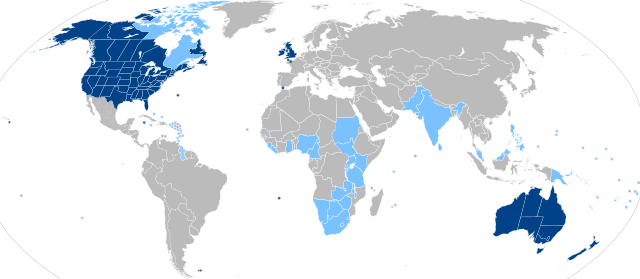 Англі́йська мо́ва (англ. English, the English language) — мова, що належить до західногерманської підгрупи індоєвропейської мовної сім'ї, якою спочатку розмовляли жителі ранньосередньовічної Англії. Названа на честь англів, одного з давніх германських народів, які мігрували з Ангельна, півострова на Балтійському морі, пізніше — на територію Великої Британії, названу на їхню честь — Англія. Живі мови, найближчі до англійської, включають шотландську рівнинну, за нею йдуть нижньосаксонська та фризька мови. Хоча англійська мова є спорідненою з німецькою, її словниковий запас зазнав надзвичайно великого впливу від старонормандської і латинської, а також від давньоскандинавської мов. HyperText Markup Language — мова розмітки гіпертексту) — стандартизована мова розмітки документів для перегляду вебсторінок у браузері. Браузері 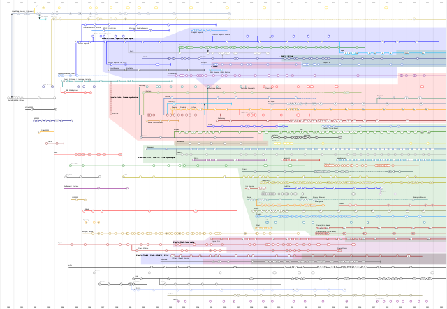 Бра́узер, також бравзер, переглядач, вебпереглядач, вебоглядач[1], вебнавігатор (англ. browser МФА: [ˈbraʊ̯zɚ]) — програмне забезпечення для комп'ютера або іншого електронного пристрою, як правило, під'єднаного до Інтернету, що дає можливість користувачеві взаємодіяти з текстом, малюнками або іншою інформацією на гіпертекстовій вебсторінці. Тексти та малюнки можуть містити посилання на інші вебсторінки, розташовані на тому ж вебсайті або на інших вебсайтах. Вебпереглядач з допомогою гіперпосилань дозволяє користувачеві швидко та просто отримувати інформацію, розміщену на багатьох вебсторінках. отримують HTML документ від сервера за протоколами HTTP/HTTPS або відкривають з локального диска, далі інтерпретують код в інтерфейс, який відображатиметься на екрані монітора. 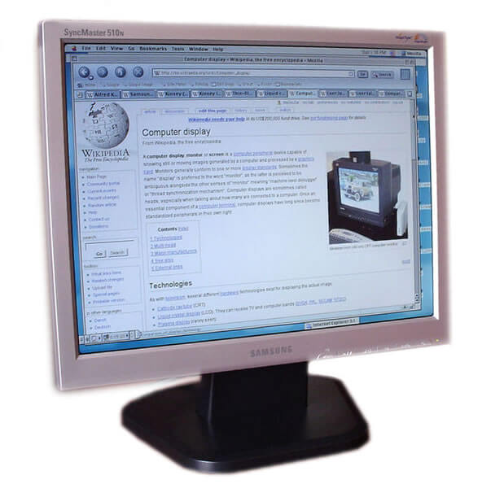 Моніто́р або дисплей — електронний пристрій для відображення інформації. Пристрій, призначений для відтворення відеосигналу і візуального відображення інформації, отриманої від комп'ютера.
Елементи
HTML
є будівельними блоками сторінок
HTML. За допомогою конструкцій
HTML, зображення та інші об'єкти, такі як
інтерактивні форми
, можуть бути вбудовані у візуалізовану сторінку.
HTML
надає засоби для створення структурованих документів,
позначаючи структурну семантику тексту, наприклад
заголовки, абзаци, списки, посилання, цитати та інші
елементи. Елементи
HTML
окреслені тегами, написаними з використанням кутових
дужок. Теги на кшталт
<
img
/>
чи
<
input
/>
безпосередньо виводять вміст на сторінку. Інші теги,
такі як
<
p
>
, оточують текст і надають інформацію про нього, а також
можуть включати інші теги як піделементи. Браузери не
показують теги
HTML, але використовують їх для інтерпретації вмісту
сторінки.
В HTML можна вбудовувати програми, написані на скриптових мовах , наприклад JavaScript , які впливають на поведінку та вміст вебсторінок. Включення CSS визначає вигляд і компонування вмісту. World Wide Web Consortium Консорціум Всесвітнього павутиння (англ. World Wide Web Consortium, W3C) — головна міжнародна організація, що розробляє й впроваджує технологічні стандарти для Всесвітнього павутиння. Заснована 1994 року Тімом Бернерсом-Лі, — винахідником Всесвітнього павутиння, що він його очолює. Станом на квітень 2001 року організація налічувала 5 учасників. (W3C), який супроводжує стандарти HTML та CSS, заохочує використання CSS над явним презентаційним HTML з 1997 року. [1]
HTML впроваджує засоби для: [1]
- створення структурованого документа шляхом позначення структурного складу тексту: заголовки, абзаци, списки, таблиці, цитати та інше;
- отримання інформації зі Всесвітньої мережі через гіперпосилання Гіперпосила́ння, або просто посила́ння — активний текст, зображення чи кнопка на вебсторінці, натиснення на яку викликає перехід на іншу сторінку чи іншу частину поточної сторінки. ;
- створення інтерактивних форм;
- включення зображень, звуку, відео, та інших об'єктів до тексту.

Історія розвитку HTML
1980 року фізик
Тім Бернерс-Лі
 Сер Тімоті Джон Бе́рнерс-Лі
(англ. Sir Timothy John «Tim» Berners-Lee; нар.
8 червня 1955, Лондон) — британський спеціаліст
з інформатики, творець HTTP, HTML, URI і автор
інших розробок в галузі інформаційних
технологій, засновник та голова консорціуму W3C,
головний розробник Всесвітньої павутини (спільно
з Робертом Кайо)[5], автор концепції семантичної
павутини. Лауреат премії Тюрінга 2016 року.
, який на той час був співробітником
CERN
, запропонував і прототипував систему
INQUIRE
, яка мала полегшити сумісне користування документами
для дослідників
CERN.
Сер Тімоті Джон Бе́рнерс-Лі
(англ. Sir Timothy John «Tim» Berners-Lee; нар.
8 червня 1955, Лондон) — британський спеціаліст
з інформатики, творець HTTP, HTML, URI і автор
інших розробок в галузі інформаційних
технологій, засновник та голова консорціуму W3C,
головний розробник Всесвітньої павутини (спільно
з Робертом Кайо)[5], автор концепції семантичної
павутини. Лауреат премії Тюрінга 2016 року.
, який на той час був співробітником
CERN
, запропонував і прототипував систему
INQUIRE
, яка мала полегшити сумісне користування документами
для дослідників
CERN.
1989 року Бернерс-Лі запропонував впровадити на базі Internet 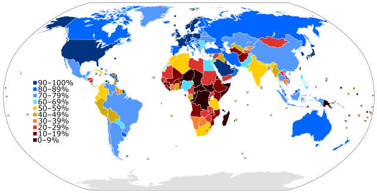 Інтерне́т (від англ. Internet), міжнародна комп'ютерна мережа, всемере́жжя[1][2], (дослівно) міжмере́жа[3], міжмере́жжя[4][5][6][7] — всесвітня система сполучених комп'ютерних мереж, що заснована на комплекті Інтернет-протоколів. Інтернет також називають мережею мереж, бо він складається з мільйонів локальних і глобальних приватних, публічних, академічних, ділових і урядових мереж, пов'язаних між собою з використанням різноманітних дротових, оптичних і бездротових технологій. Міжмережжя становить фізичну основу для розміщення величезної кількості інформаційних ресурсів і послуг, як-от взаємопов'язані гіпертекстові документи Всесвітнього павутиння (World Wide Web — WWW) та електронна пошта. гіпертекстову систему документів. [2]
Вже наприкінці 1990 року він розробив HTML і написав браузер Бра́узер, також бравзер, переглядач, вебпереглядач, вебоглядач[1], вебнавігатор (англ. browser МФА: [ˈbraʊ̯zɚ]) — програмне забезпечення для комп'ютера або іншого електронного пристрою, як правило, під'єднаного до Інтернету, що дає можливість користувачеві взаємодіяти з текстом, малюнками або іншою інформацією на гіпертекстовій вебсторінці. Тексти та малюнки можуть містити посилання на інші вебсторінки, розташовані на тому ж вебсайті або на інших вебсайтах. Вебпереглядач з допомогою гіперпосилань дозволяє користувачеві швидко та просто отримувати інформацію, розміщену на багатьох вебсторінках. та серверне програмне забезпечення Програ́мне забезпе́чення (програ́мні за́соби) (ПЗ; англ. software) — сукупність програм системи оброблення інформації та програмних документів, необхідних для експлуатації цих програм[1]. Це набір інструкцій, які розповідають комп'ютеру, як працювати,[2][3] на відміну від апаратного забезпечення, яке, фактично, і виконує ці вказівки. для запропонованої системи. У цьому ж році Тім Бернерс-Лі та Роберт Кайо 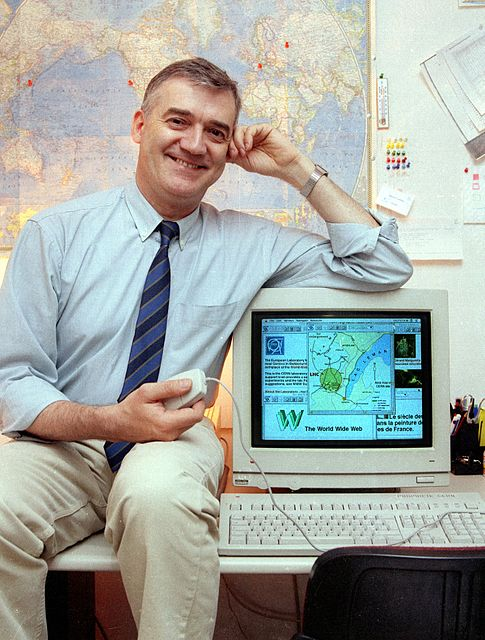 Роберт Кайо — бельгійський інженер, доктор наук, разом з Тімом Бернерсом-Лі розробив технологію Всесвітнього павутиння. , інженер інформаційних систем CERN, подали спільну заявку на фінансування проєкту, проте цей проєкт не був офіційно прийнятий CERN.
Наприкінці 1991 року Тім Бернерс-Лі опублікував в Інтернеті перший загальнодоступний опис мови розмітки HTML, відомий як документ «HTML-теги» (HTML Tags). [3] В ньому були описані 18 елементів первісної, відносно простої схеми розмітки HTML. Всі вони, за винятком тегу 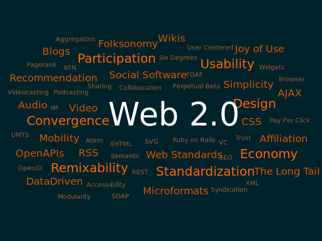 Теґ (англ. tag, буквально — «ярлик», «бирка») — у системах обробки інформації — ознака даних; (релевантне) ключове слово або термін, що асоціюється або надається фрагменту інформації (зображенню, географічній карті, відео-кліпу тощо), описуючи в такий спосіб фрагмент та дозволяючи здійснювати класифікацію на основі ключових слів та пошук інформації; теґи використовуються для таких ресурсів як комп'ютерні файли, вебсторінки, цифрові зображення, закладки тощо[1]. гіперпосилання, були жорстко підпорядкований внутрішньому SGML -формату документації CERN. Одинадцять із тих елементів ще й досі існують у HTML4. [4]
Бернерс-Лі розглядав HTML як похідну мову від SGML, і в середині 1993 року Спеціальна Комісія Інтернет-розробок 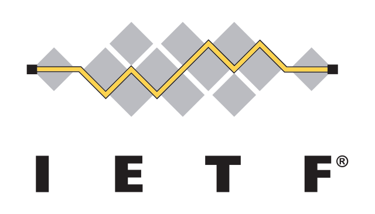 IETF — відкрите міжнародне співтовариство проектувальників, учених, мережевих операторів і провайдерів, створене IAB в 1986 році, яке займається розвитком протоколів і архітектури Інтернету. (IETF) офіційно визначила її такою, опублікувавши першу специфікацію HTML: «Hypertext Markup Language (HTML)» Internet-проєкт [ Архівовано 15 квітня 2009 у Wayback Machine 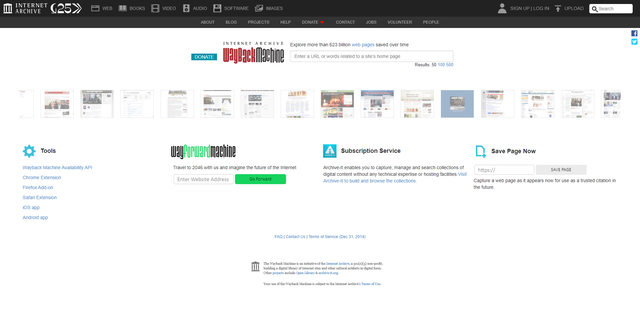 Wayback Machine — цифровий архів всесвітньої павутини та іншої інформації в Інтернеті. Його запустила 2001 року неприбуткова організація під назвою Інтернет-архів, що базується в Сан-Франциско.Wayback Machine — цифровий архів всесвітньої павутини та іншої інформації в Інтернеті. Його запустила 2001 року неприбуткова організація під назвою Інтернет-архів, що базується в Сан-Франциско. .] , авторами якої були Тім Бернерс-Лі та Ден Конолі. Ця специфікація вже містила визначення типу документа, яке чітко зазначало граматику HTML. [5]
Проєкт втратив силу через 6 місяців, але відзначився використанням для браузера NCSA Mosaic 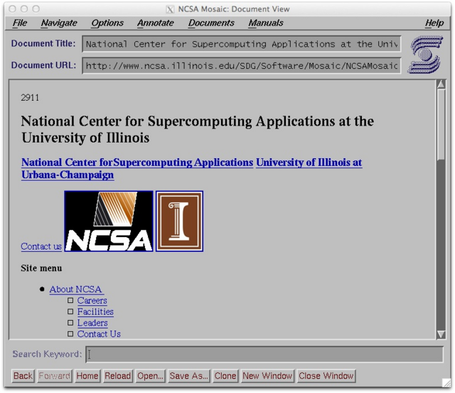 NCSA Mosaic — графічний вебоглядач, створений дослідниками з National Center for Supercomputing Applications університету Іллінойс. Метою створення оглядача було полегшення доступу користувачів до ресурсів комп'ютерних мереж. Його перша версія вийшла 22 квітня 1993 року. Цей оглядач популяризував використання Всесвітньої Мережі Інтернет, оскільки він мав дружній інтерфейс та давав змогу переглядати не тільки текстові, а й графічні об'єкти, відтворювати аудіофайли, робити закладки та інше. тегу додавання зображень, відобразивши філософію IETF щодо базування стандартів на успішних прототипах. [6] Так само пізніше в 1993 році в конкуруючому Інтернет-проєкті Дейва Раджетта «HTML+ ( Hypertext Markup Format )», було запропоновано стандартизувати вже запроваджені браузерами сенсаційні на той час можливості, такі як таблиці та перші інтерактивні форми.
На початку 1994 року, після того, як проєкти «HTML» і «HTML+» втратили свою силу, IETF створив Робочу групу HTML ( HTML Working Group). 1995 року Робоча група HTML завершила роботу над документом «HTML 2.0» (опублікований як RFC із номером 1866), першою специфікацією, що мала бути використана як базовий стандарт для подальших вдосконалень HTML. [6] Версія 2.0 окреслювала чіткі відмінності між новим виданням специфікації та попередніми проєктами.
Подальші розробки під заступництвом IETF зіштовхнулися з конкуруючими інтересами. З 1996 року специфікації HTML затверджувались Консорціумом W3C Консорціум Всесвітнього павутиння (англ. World Wide Web Consortium, W3C) — головна міжнародна організація, що розробляє й впроваджує технологічні стандарти для Всесвітнього павутиння. Заснована 1994 року Тімом Бернерсом-Лі, — винахідником Всесвітнього павутиння, що він його очолює. Станом на квітень 2001 року організація налічувала 5 учасників. , враховуючи доповнення до розмітки, що впроваджувалися компаніями-розробниками браузерів. Тим не менш, у 2000 році HTML стала міжнародним стандартом ( ISO 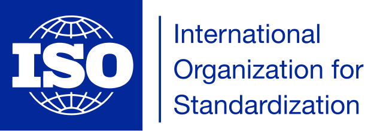 Міжнародна організація зі стандартизації (англ. International Organization for Standardization, ISO) — міжнародна організація, метою діяльності якої є ратифікація стандартів, розроблених спільними зусиллями делегатів від різних країн. / IEC 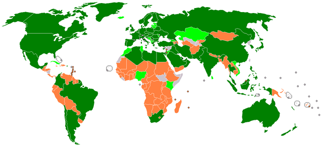 Міжнаро́дна електротехні́чна комі́сія — міжнародна організація зі стандартизації у сфері електричних, електронних і суміжних технологій. Деякі із стандартів МЕК розробляються спільно з Міжнародною організацією із стандартизації (ISO). 15445:2000).
Остання специфікація HTML, опублікована W3C наприкінці 1999 року, має назву «HTML 4.01 Recommendation». Усі спірні питання та помилки цієї специфікації були офіційно визнані у списку друкарських помилок, опублікованому в 2001 році.
Версії
Тім Бернерс-Лі
Сер Тімоті Джон Бе́рнерс-Лі
(англ. Sir Timothy John «Tim» Berners-Lee; нар.
8 червня 1955, Лондон) — британський спеціаліст
з інформатики, творець HTTP, HTML, URI і автор
інших розробок в галузі інформаційних
технологій, засновник та голова консорціуму W3C,
головний розробник Всесвітньої павутини (спільно
з Робертом Кайо)[5], автор концепції семантичної
павутини. Лауреат премії Тюрінга 2016 року.
представив HTML в дослідницькому центрі
CERN
в
Женеві
Жене́ва
— місто на південному заході Швейцарії на
узбережжі Женевського озера та річки Рона.
Адміністративний центр кантону Женева. Друге за
розміром місто Швейцарії після Цюриху.
1989 року.
[7]
- HTML ― (без номера версії, 3 листопада 1992): найперша версія, орієнтована лише на текст. [8]
- HTML ― (без номера версії, 30 квітня 1993): до тексту додано атрибути, які визначають курсивне або жирне написання літер, та зображення.
- HTML+ ― (листопад 1993): заплановані доповнення, які потрапили до наступних версій, але ніколи не були відокремлені як HTML+. [9]
- HTML 2.0 ― (листопад 1995): визначена стандартом RFC 1866 версія з підтримкою форм. Статус цього стандарту вже «історичний», також визнані застарілими попередні версії.
- HTML 3.0 ― версія, яка не зазнала поширення, оскільки із випуском браузера Netscape Navigator Netscape Navigator — браузер, розробник — компанія Netscape Communications. Пізніше став основою для створення Mozilla Firefox. версії 3 цей стандарт вже був застарілим.
- HTML 3.2 ― (14 січня 1997): були додані численні можливості, такі як таблиці, обтікання текстом зображень, інтеграція аплетів .
- HTML 4.0 ― (18 грудня 1997): були додані таблиці стилів, скрипти та фрейми. Також відбулось розділення на Strict (суворе дотримання стандартів), Frameset (з підтримкою фреймів), Transitional (перехідний). 24 квітня 1998 було випущено виправлену версію цього стандарту.
- HTML 4.01 ― (24 грудня 1999): заміна версії HTML 4.0, містить численні дрібні виправлення.
-
HTML5
HTML5
— наступна версія мови HTML. До складу
робочої групи з HTML5 увійшли AOL, Apple,
Google, IBM, Microsoft, Mozilla, Nokia,
Opera та кілька сотень інших виробників.
― (Working Draft, 5 квітня 2008):
[10]
HTML 5 має новий словник, побудований на основі HTML
4.01 та XHTML 1.0. Також перероблена і розширена
пов'язана з HTML специфікація DOM.
- XHTML 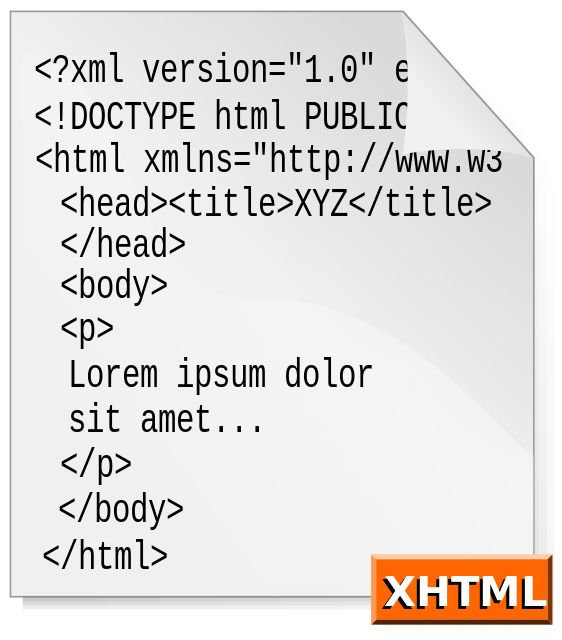 XHTML — мова розмітки, що має таку саму виразну силу як і HTML але відповідає синтаксичним правилам XML. ― (26 січня 2000): висловлення стандарту HTML 4.01 засобами XML Розши́рювана мо́ва розмі́тки (англ. Extensible Markup Language, скорочено XML) — запропонований консорціумом World Wide Web Consortium (W3C) стандарт побудови мов розмітки ієрархічно структурованих даних для обміну між різними застосунками, зокрема, через Інтернет.[1] Є спрощеною підмножиною мови розмітки SGML. XML-документ складається із текстових знаків, і придатний до читання людиною. . 1 серпня 2002 було випущено оновлену редакцію стандарту.
- XHTML 1.1 ― (31 травня 2001): після того, як XHTML буде розділено на модулі, стандарт XHTML 1.1 визначатиме сувору версію, в якій не буде запроваджених HTML 4 можливостей Frameset та Transitional.
- XHTML 2.0 ― (розробка припинена в 2010 році): ця версія вже не базується на HTML 4.01 і додає деякі нові теги. Буде завершено розділення між представленням та вмістом.
Документ HTML
Для поліпшення взаємодії SGML вимагає аби кожна похідна мова (HTML у тому числі) визначала свою кодову таблицю для кожного документа, яка складається з репертуару (перелік різноманітних символів) та позиції символу (перелік цифрових посилань на символи з репертуару). Кожен документ HTML — це послідовність символів із репертуару.
HTML використовує найповнішу кодову таблицю UCS (англ. Universal Character Set — Універсальний Набір Символів).
Проте однієї кодової таблиці недостатньо для того, щоб браузери могли правильно відтворювати документи HTML. Для цього браузерам потрібно «знати» специфічну кодову таблицю документа, яку автор має зазначати завжди в елементі meta із параметром charset. За замовчуванням використовується кодова таблиця ISO-8859-1, відома також як Latin-1.
Розмітка
Розмітка в HTML складається з чотирьох основних компонентів: елементів (та їхніх атрибутів), базових типів даних, символьних мнемонік та декларації типу документа.
Загальна структура
Документ HTML 5.2 складається з трьох частин:
- Декларація типу документа ( англ. Англі́йська мо́ва (англ. English, the English language) — мова, що належить до західногерманської підгрупи індоєвропейської мовної сім'ї, якою спочатку розмовляли жителі ранньосередньовічної Англії. Названа на честь англів, одного з давніх германських народів, які мігрували з Ангельна, півострова на Балтійському морі, пізніше — на територію Великої Британії, названу на їхню честь — Англія. Живі мови, найближчі до англійської, включають шотландську рівнинну, за нею йдуть нижньосаксонська та фризька мови. Хоча англійська мова є спорідненою з німецькою, її словниковий запас зазнав надзвичайно великого впливу від старонормандської і латинської, а також від давньоскандинавської мов. Document type declaration, Doctype), на початку документа, в якій визначається тип документа ( DTD ).
- Шапка документа (знаходиться в межах елемента head), в якій записано загальні технічні відомості або додаткова інформація про документ, яка не відтворюється безпосередньо в браузері;
- Тіло документа (може знаходитися в елементі body), в якому міститься основна інформація документа.
Нижче наведено приклад загальної структури HTML-документа:
<!DOCTYPE html>
<html>
<head>
<title>lesson 3</title>
</head>
<body>
<p>Thank you to the mentors for checking!</p>
</body>
</html>